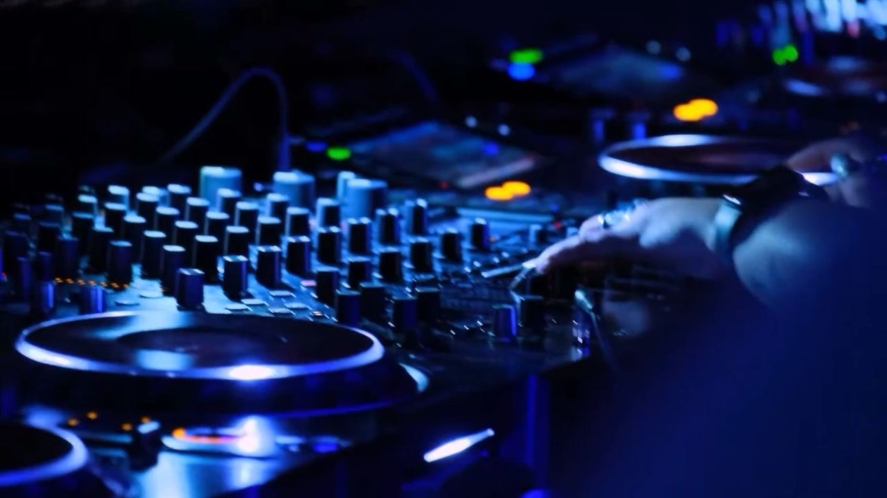
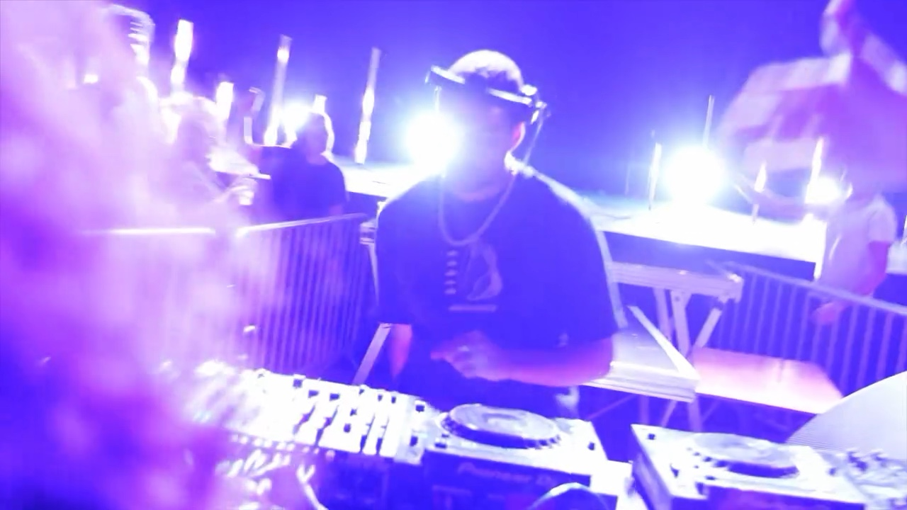
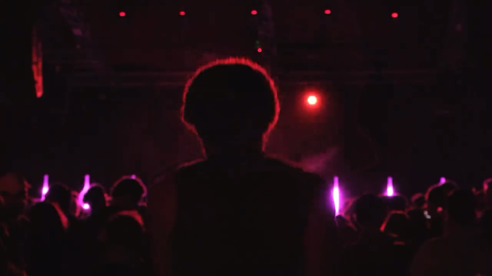
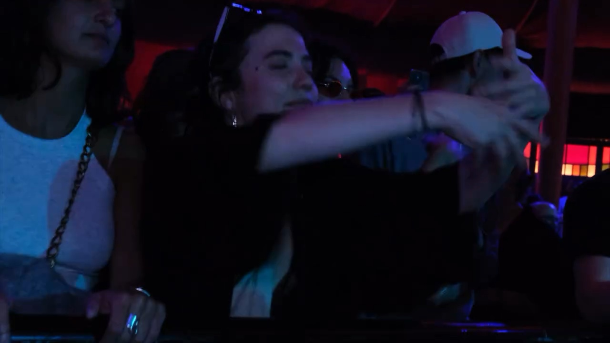

Événementiel · Cabaret Sauvage · Divine Musique & 1.2.3. Sauvage
Aftermovie au Cabaret Sauvage : capter l'énergie de la soirée et faire rayonner l'événement
Restituer toute l'intensité d'une soirée au Cabaret Sauvage à Paris en un aftermovie immersif de 50 secondes, pensé pour engager la communauté et amplifier les prochaines dates.
- Client
- Cabaret Sauvage · Divine Musique & 1.2.3. Sauvage
- Secteur
- Événementiel & spectacle vivant
- Livrables
- Aftermovie officiel (50 s) + déclinaisons réseaux sociaux
- Année · Durée
- 2025 · Tournage 1 soirée · Livraison rapide
Résultats obtenus
- +65%de partages et d'interactions sur les réseaux
- 85%de taux de rétention vidéo jusqu'à la fin
- x2,5de portée organique auprès du public parisien
- 50 sde condensé d'énergie prêt à diffuser
01 — Contexte
Le contexte & les enjeux
À l'occasion d'une soirée réunissant Divine Musique et 1.2.3. Sauvage sous le chapiteau emblématique du Cabaret Sauvage à Paris, les organisateurs souhaitaient un aftermovie percutant. L'objectif : prolonger l'émotion de la soirée auprès des participants présents et donner immédiatement envie à ceux qui l'avaient manquée de réserver pour la prochaine édition.
02 — Attentes
Ce que le client attendait
- Retranscrire l'atmosphère unique du Cabaret Sauvage, entre jeux de lumières et proximité avec les artistes
- Mettre en valeur à la fois la performance aux platines et la ferveur du public
- Livrer un format nerveux, immersif et parfaitement calibré pour Instagram et les réseaux sociaux
- Renforcer l'image et la désirabilité des événements signés Divine Musique & 1.2.3. Sauvage
03 — Contraintes
Les contraintes du projet
- Conditions de très basse lumière avec éclairages stroboscopiques et néons à forts contrastes
- Foule dense et mouvements permanents autour de la scène et dans la fosse
- Captation sur le vif, sans jamais gêner les artistes ni l'expérience du public
- Montage ultra-rythmé exigeant une synchronisation millimétrée avec la bande-son
04 — Propositions
Les pistes que nous avons proposées
-
Le récapitulatif linéaire de la soirée
Suivre chronologiquement l'ouverture des portes jusqu'à la fin de la nuit.
-
L'immersion sensorielle au cœur du chapiteau Piste retenue
Plonger le spectateur dès la première seconde entre les mains des DJ, les regards du public et les jeux de lumière, avec une montée en puissance calée sur le drop musical.
-
Focus exclusif sur la scène
Un film centré uniquement sur les performances des artistes aux platines.
05 — Solution
La solution retenue
Nous avons retenu la piste de l'immersion sensorielle. En jouant avec des optiques lumineuses à grande ouverture, nous avons alterné plans très serrés sur les platines, silhouettes découpées dans les faisceaux rouges et bleus du Cabaret Sauvage, et réactions spontanées au cœur de la foule. Le montage en 50 secondes monte progressivement en intensité pour maximiser le taux de complétion et les partages.
06 — Production
Tournage & montage
Tournage
Captation nocturne mobile au cœur de la scène et du public avec caméras et optiques professionnelles à grande ouverture.
Montage
Montage dynamique synchronisé au tempo, travail de transitions et étalonnage soigné mettant en valeur les teintes néon et l'ambiance du chapiteau.
Équipe
Réalisateur-cadreur et monteur dédiés à l'événement.
07 — Résultat
Le résultat



L'aftermovie capte exactement l'énergie qu'il y avait sous le chapiteau ce soir-là. C'est devenu notre meilleur atout pour annoncer nos prochaines dates.

Et si le prochain cas client, c'était le vôtre ?
Parlez-nous de vos enjeux. Nous revenons vers vous avec des idées concrètes, pas avec un devis générique.